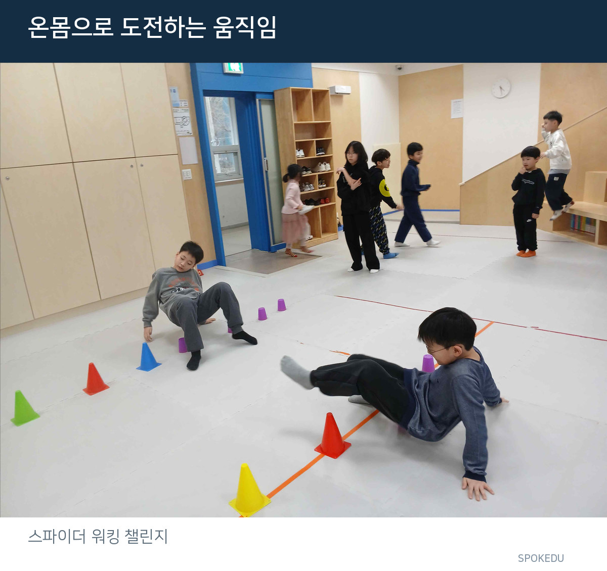
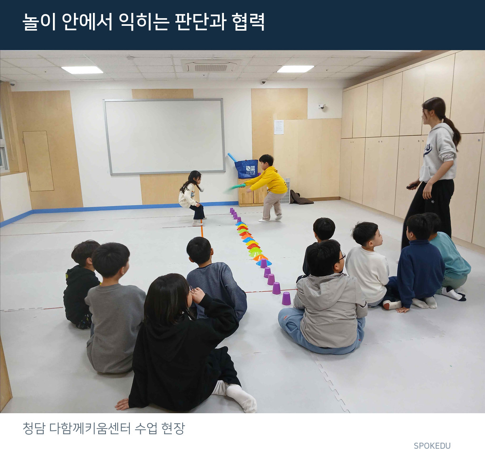

협동 달리기에서 아이들이 서로 더 빠르게 돌아올 방법을 의논했습니다. 이날 수업에서 인상 깊었던 것은 누가 먼저 도착했는지가 아니라 함께 움직이는 방법을 찾는 모습이었습니다.
2026년 3월 5일. 서울 청담 다함께키움센터에서 초등학교 1~5학년 아동 12명과 민첩성·협응력·순간 판단을 주제로 놀이체육을 진행했습니다. 같은 공간과 같은 규칙 안에서도 아이들의 반응은 활동마다 달랐습니다.
달리기에 협동이라는 과제를 더하면
시작은 기본 달리기와 정적·동적 스트레칭 그리고 팔벌려뛰기였습니다. 몸을 준비한 뒤 무브먼트 플로우와 코끼리코 돌고 달리기로 방향과 움직임의 변화를 경험했습니다.
이어서 협동 달리기를 진행했습니다. 활동일지에는 아이들이 서로 더 빠르게 돌아오기 위한 방법을 이야기하며 적극적으로 참여한 모습이 기록돼 있습니다.
여기서 눈여겨볼 부분은 속도 자체보다 함께 해결할 과제가 주어졌다는 점입니다. 혼자 뛰는 달리기와 달리 협동 달리기에서는 친구와 방법을 의논하는 과정이 수업의 일부가 됩니다.
SPOKEDU가 현장 수업을 기록할 때 중요한 것은 활동명만이 아닙니다. 어떤 과제에서 아이들이 의견을 나눴는지 살펴봐야 다음 수업의 난도와 협력 방식을 결정할 근거가 생깁니다.

한 수업에도 서로 다른 반응이 나타납니다
스파이더 워킹 챌린지는 손과 발로 몸을 지지하며 이동하는 협응 과제입니다. 활동일지에는 이 동작을 고학년 아동도 어려워했다는 관찰이 남아 있습니다. 단순히 나이가 많다고 모든 움직임에 익숙한 것은 아니라는 점을 보여줍니다.
반면 거울 술래잡기는 이날 아이들이 가장 즐거워하며 적극적으로 참여한 활동이었습니다. 상대의 움직임을 살펴보고 그에 맞춰 움직이는 규칙은 관찰과 반응을 동시에 요구합니다.
같은 수업에서도 새로운 동작을 수행하는 난도와 놀이에 몰입하는 정도는 다를 수 있습니다. 따라서 참여가 활발했다는 사실만으로 모든 움직임 기술이 향상됐다고 단정하지 않습니다. 무엇이 어려웠고 무엇에 흥미를 보였는지 구분해 기록하는 것이 먼저입니다.

승부가 생기는 순간, 지도 기준도 달라집니다
마지막 활동은 경찰과 도둑 놀이였습니다. 도둑은 민첩하게 움직이고 경찰은 상대의 이동을 보며 빠르게 판단해야 하는 역할 놀이였습니다. 아이들은 규칙에 몰입해 적극적으로 참여했습니다.
하지만 수업이 매끄럽기만 했던 것은 아닙니다. 일부 아동은 승패의 결과에 따라 친구를 비난하거나 감정적으로 반응했습니다. 실제 활동일지에 남은 중요한 관찰입니다.
어려웠던 움직임과 감정적인 반응까지 다음 수업의 설계 자료로 삼습니다.
이 장면은 경쟁 놀이의 가치를 부정하는 근거가 아닙니다. 오히려 지도자가 움직임 과제뿐 아니라 관계와 규칙을 함께 설계해야 한다는 점을 보여줍니다.
다음 수업에서는 활동 시작 전 스포츠맨십과 서로를 존중하는 태도를 더욱 분명히 안내할 계획입니다. 협동 달리기에서의 의논, 스파이더 워킹의 난도 차이, 경쟁 놀이에서의 감정 반응까지. 오늘의 관찰은 다음 수업을 설계하는 자료가 됩니다.
움직임으로 아이의 성장을 설계한다는 것은 모든 수업을 성공담으로 꾸미는 일이 아닙니다. 잘 참여한 순간과 지도에 더 필요한 순간을 함께 살피는 일입니다.
협동 과제 · 아이들이 스스로 방법을 의논했습니다.
협응 과제 · 고학년에게도 어려운 움직임이 있었습니다.
경쟁 과제 · 승패와 함께 스포츠맨십 지도가 필요했습니다.